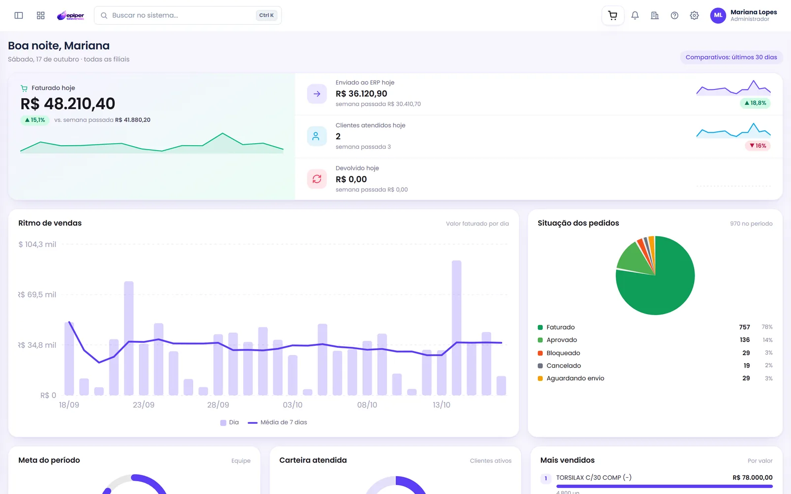
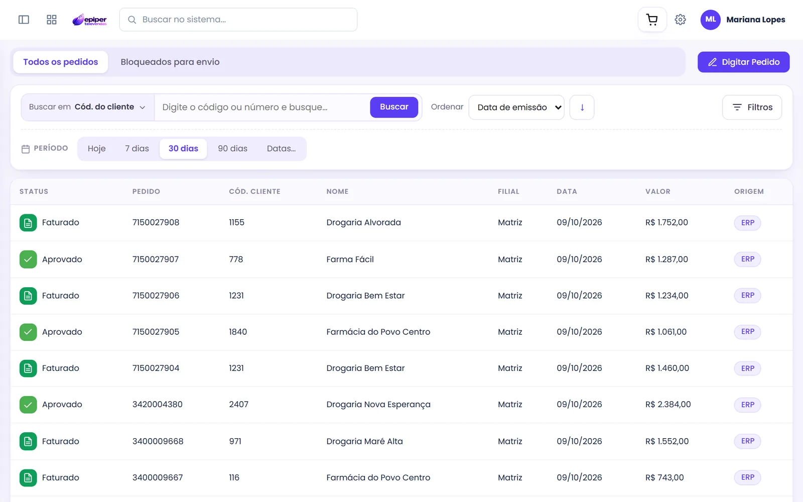

Selecione o cliente
O operador inicia o atendimento com dados do cliente e contexto comercial.
O Televendas reúne carteira, produtos, preço, estoque e pedido para a equipe interna vender com o contexto que está no ERP.

A tela é pensada para o operador encontrar o que precisa enquanto conversa com o cliente e conduz a venda.
O operador inicia o atendimento com dados do cliente e contexto comercial.
Busca produtos, histórico, preço, estoque e condições relevantes.
Inclui itens e conduz a venda em um fluxo mais organizado.
O pedido segue para integração e acompanhamento do processamento.
A proposta é aproximar cliente, produto e regra comercial no momento em que a venda acontece.
Uma tela pensada para a rotina de quem vende por telefone ou atendimento assistido.
Contexto do cliente junto do fluxo de criação do pedido.
Encontre itens com mais agilidade durante o atendimento.
Informações comerciais importantes próximas do operador.
Apoio para acompanhar pedidos e dar retorno ao cliente.
Pedido e dados comerciais conectados à operação existente.
A proposta é organizar a venda assistida: trazer contexto antes da abordagem, agilizar a consulta durante o atendimento e manter o registro do pedido dentro do mesmo fluxo comercial.
Cliente, histórico, funil e próximos contatos ficam próximos durante a rotina comercial.
PreparaçãoBusca, estoque, preço, títulos e condições ajudam a equipe sem alternar entre várias fontes.
AtendimentoO operador monta a venda e pode organizar contatos por WhatsApp e chat interno no mesmo ambiente.
ExecuçãoDashboard, produtividade e relatórios ajudam a liderança a acompanhar a equipe.
GestãoO fluxo aproxima informação, execução e gestão para que a equipe comercial concentre energia no atendimento em vez de procurar dados espalhados.

Funcionalidade, integração e processo precisam caminhar juntos. Estes são os pontos que mais influenciam a qualidade do projeto e a adoção da equipe.
A solução representa venda assistida e pode apoiar outros canais de atendimento quando o processo exige contexto do cliente, consulta comercial e montagem do pedido pela equipe interna.
A Epiper organiza o atendimento em uma camada comercial própria e se conecta ao ERP da empresa. WinThor TOTVS é um cenário de destaque, mas a arquitetura pode ser adaptada a outros sistemas.
Mostre como sua equipe atende hoje, quais informações consulta e como o pedido chega ao ERP. A Epiper estrutura a solução de acordo com esse cenário.